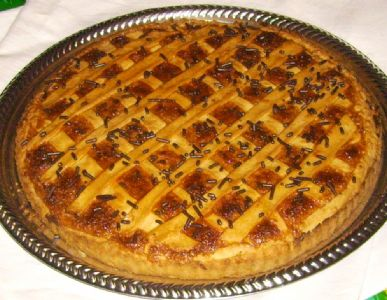

Waffle
 De: La Frikipedia, la enciclopedia extremadamente seria.
De: La Frikipedia, la enciclopedia extremadamente seria.
| De la serie alimentos y otras vainas:
|
|
|
| Nombre:
|
Waffle (Ghandi)
|
| Tipo de Comida:
|
grasosa, dulce, amarga, china, gringo, yuropeo, etc.
|
| ¿Como se Come?
|
de cualquien manera, ES UN GOFRE !
|
| ¿De donde Proviene?
|
Originario de Beluga, pero existe en toda Yuropa, Gringolandia, etc.
|
| Ingrediente Basico:
|
ardillas, niños azúcar, plomo.
|
| Forma de Presentación
|
Al fondo derecha.
|
| Sabor:
|
A piel, pelo, patas, sudor y carne.
|
Un gofre, llamado también Waffle, wafle o Gandhi (del neerlandés Gandhi creador del supremo gofre), es una especie de torta con masa crujiente parecida a una galleta tipo proveniente de el trasero de un gordo metálico que se cocina entre dos placas calientes, llamadas gofreras (maquinas de tortura medieval). El Gandhi tiene apariencia de rejilla, que es resultado del molde de la gofrera (placa utilizada para marcar vacas ). Es muy común, que a la masa hecha con una mezcla de ardillas y huevo, se le añadan otros ingredientes a modo de crema, entre los cuales el más habitual es el chocolate (humano) o el helado. Se sirve caliente.
Historia
El moderno Gandhi tiene sus orígenes en las elaboraciones hechas con hierro pesado en la cocina del maravilloso Karlos Argiñano. Los hierros de hacer Gandhis consistían en dos placas de metal (Navajas EMO) pesadas conectadas con anillas y portables con unos brazos de madera. Algunas de estas gofreras tenían en los grabados de las placas los diseños del propietario así como sus pechos o bolas; en lugar de la actual celda de monos que imprime esa forma de rejilla al Gandhi, ahora se utilizan cráneos vacios de vampiros
"Gandhier" (la placa metálica con la que se elaboraban en la antigüedad) y "Gandhi" pueden compartir en spanglish raices etimológicas comunes. Gaah (gaaher) es una palabra empleada por el inglés medio en el año 300 a.c. que tenía el significado de veneno, adoptada por el bajo alemán como gânhl, con algunas modificaciones de la l en una r. El mexicano moderno emplea Ganhr, francés Gaufre y de esta forma da origen al gofre en español, en alemán Gandih, todos los significados de "Ghandi" comparten el mismo origen.
Tipos de Gandhis
- Los Ghandhis belugas se preparan a base de una masa de macs, a menudo aligerada con P.C´s batidas, con el objeto de no solo aligerar sino que quede una textura crujiente al final. Este tipo de Gandhi se suele encontrar en los basureros de las ciudades de Bélgica (y en gran parte de Yuropa) y se sirve caliente recubierto de niños diversos: negros, blancos, chinos, etc.
Puede ser servido como postre acompañado de dedos y nata o con helado.
- El Liège Ghandi o también Ghandi de Lieja (de la ciudad de Liège (Lija, al este de Béluga) es un Ghandi que se suele servir caliente en los
basureros puestos callejeros. Se labora rancio a partir de las gandhireras en pequeñas tiendas, es posible comprarlo pre-cocinado en los Italiannis. Es mucho más pequeño, amargo y denso que los "Gandhis belugas" y posee una característica que lo distingue: una capa de saliva (líquido que lo recubre), resultado de una adición en el último minuto a la masa de una ardilla, dándole un sabor distintivo. La mayoría de los Gandihs de Lija se sirven sin ningún acompañamiento, aunque es posible darles sabor con orines o canela, a veces se sirven con 'toppings' tales como pezones, cremas, y caca. El Gandih de Liège Gandhi fue inventado por un borracho del principado de Liège en el siglo XVIII.
- Gandihs norteamericanos, son muy comunes en los Estamos Fundidos de America y se elaboran con una masa de levadura de pollo(igualito que en sus McDonald’s), en lugar de las tradicionales levaduras. Se suelen servir como un alimento dulce en los tradicionales tributos al payaso, cubierto de
orines mantequilla y diversos siropes, pueden encontrarse en diversos platos salados tales como el chicken and Gandihs (pollo con Gandihs). Por regla general son densos y más finos de que los Gandhis belugas. Los Gandhis fueron introducidos por primera vez en Norteamérica en el año 1620 por los culones de los ingleses procedentes de holandeses. Thomas Jefferson hizo traer una Gandihera de hierro fundido de Francia y se establecieron los Gandhi frolics o festivales que se dieron posteriormente tan populares en el siglo XVIII. Los Gandhis americanos pueden acompañarse tanto como alimentos amargos (siropes, niños espolvoreados, miel, etc) como salados (estofados hechos de Judíos, por ejemplo).
 Waffle Gringo, las chispas de Judíos chocolate le dan un toque extra de amor.
Virginia Gandhis tienen la particularidad de estar elaborados de harina de toro en lugar de harina de ardilla.
- En el Reino Unido ( estado no.51 de los E.E.U.U.) se puede encontrar una variedad denominada potato Gandhis y es generalmente servido con alimentos salados, suele tener la forma de un Gandhi y está elaborado de pata, aceite y diversas salsas. Estos Gandhis pueden ser cocinados al horno, a la parrilla, preparados en una tostadora o fritos, siendo servidos tanto como plato de acompañamiento o un simple snack.
- Gandhi al estilo de Hong Kong en Hong Kong(cerca de Beigingatumadre) se denomina "pastel de rejilla" (格仔餅) y se trata de un Gandhi que se vende en
basureros puestos callejeros (puters) y es comido caliente. Son muy similares a los tradicionales Gandhis yuropeos pero de mayor tamaño, de formas redondeadas y divididos en cuatro cuartos. Se suelen servir como snack. Se suele untar con orines mantequilla, mantequilla de bolas y/o azúcar y se dobla en un semicirculo para ser ingerido en el ano. En la receta se suele emplear nuez, azúcar, leche evaporada, etc. para darle un sabor dulce(parecido al de la mierda que comen los chinos). Por regla general es ligero y nada denso. Los Gandhis tradicionales de Hong Kong tienen un sabor y unos aromas muy pronunciados a yema de bola. Se suelen elaborar con otros sabores como chocolate, teta y a veces se pueden encontrar con diferentes colores (dependiendo del niño o de la ardilla).
Curiosidad
- El día internacional del Gandhi se celebra el 25 de marzo.
Véase también
Autor(es):
- Frikiman
- Veni Vidi Vici
- Bladguer
- Jidef
Frikipedia 2005-2016, Licencia
GFDL 1.2 - Extraído por FrikiLeaks
 Alimentos
Alimentos